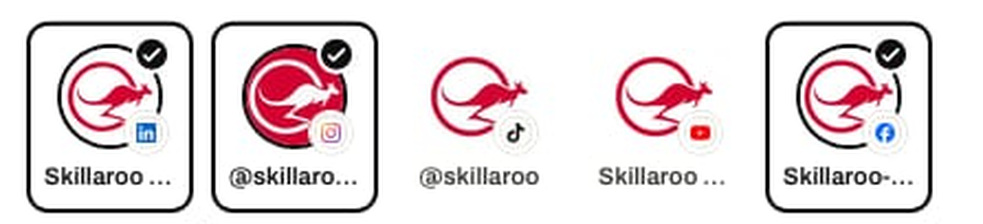
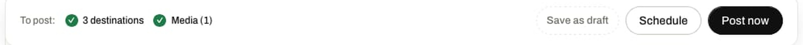
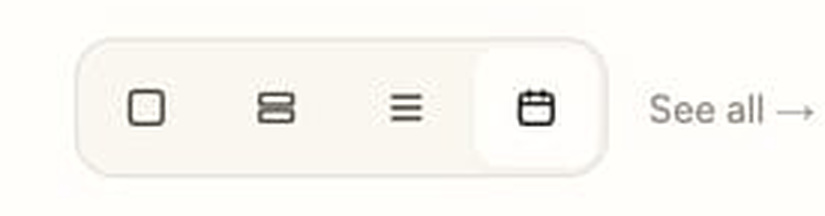
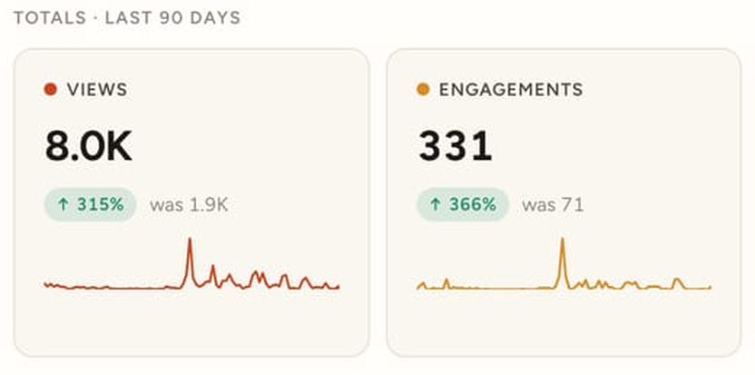
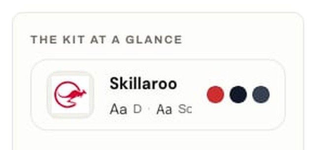
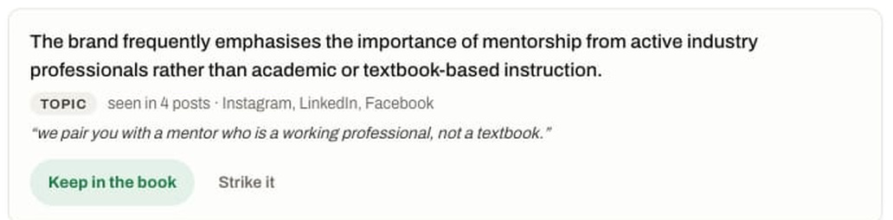
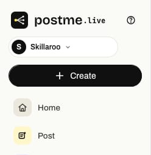
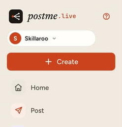

Product designer · UI/UX · Nepal
Hi, I’m Indra, a product designer who makes dense software feel obvious to the people using it.
Interfaces, information architecture and design systems for software teams — currently building postme.live with a product team in Melbourne.
Selected work
2026postme.live
A social publishing platform for small brands. Eight surfaces — composer, analytics, home, studio, inbox, media, brand book and a public bio page — built to feel like one product you could learn in an afternoon.
- Shipped
- 8 product surfaces
- One home screen
- 4 densities
- Brand kit
- re-skins the chrome
- Status
- Live · public


The kit re-skins the product itself — sidebar, buttons, filter chips, and the postme.live wordmark, which changes typeface as well as colour. Same screen, same components, no forked stylesheet.
In detail
01 — 06-
01
Say where, before you say what
Five connected accounts, each wearing its own network badge, three of them chosen — and the heading keeps the count. Picking the destination first is what lets the preview be truthful.

-
02
The last thing before it is public
Publishing cannot be undone the way closing a draft can. So the bar that carries the button also carries the summary: what is going out, where, and with what attached. Three verbs, ranked.

-
03
Four densities, one screen
Cards, split, list, calendar. The same home screen, four ways to read it, chosen from a single control rather than four pages in a menu. Nobody has to be told it exists.

-
04
A number that carries its own history
Someone opens analytics to answer one question: did the last thing work? So every total states where it came from and draws its own ninety days underneath. No second click to find out.

-
05
The kit as one object
A logotype, two typefaces and three colours, on one card. This is what the rest of the product reads from — not a folder of assets someone has to remember to open.

-
06
Learned, then held for approval
The product reads what gets published and drafts a note about the brand. It waits. Keep it and it starts steering the writing; strike it and it never comes back. Nothing is applied silently.

One stylesheet, two faces
Default chrome on the left; the customer’s kit applied on the right. The sidebar, the avatar, the primary button and the postme.live wordmark itself — which changes typeface as well as colour. Same components, no fork.


This page has one too
Same mechanism, same argument: one set of tokens, four kits, and nothing forked. Change the kit and watch what moves — the wash, the accents, the marks, the numbers on the left.
Services
01 — 04-
01
Product & interface design
Screens, states, and the edge cases in between.
screen designsempty & error statesresponsive rules
-
02
UX & information architecture
What goes where, and why.
site & app mapsuser flowsnavigation model
-
03
Design systems
Tokens and components that hold as a team grows.
colour & type tokenscomponent libraryusage notes
-
04
Prototyping & handoff
Specifications engineers can build from.
clickable prototypesredlinesbuild notes
About
Nepal · UTC+5:45
Indra Kumari Bhattarai
Product designer · UI/UX
- Based in
- Madhyapur Thimi, Nepal
- Time zone
- UTC+5:45
- Works with
- SaaS & software teams
- Status
- Available
Most of what I do is subtraction.
I work on the parts of software that get used rather than admired — dashboards, composers, editors, settings. The screen someone opens for the fortieth time this week.
A landing page is seen once; a product is used daily. The second job is harder, and it is the one I take.
I work on a few projects at a time, and hand over tokens and reasoning rather than flat files, so a team can keep going without me.
Contact
Available for workTell me what you’re building, and what is getting in the way of it.